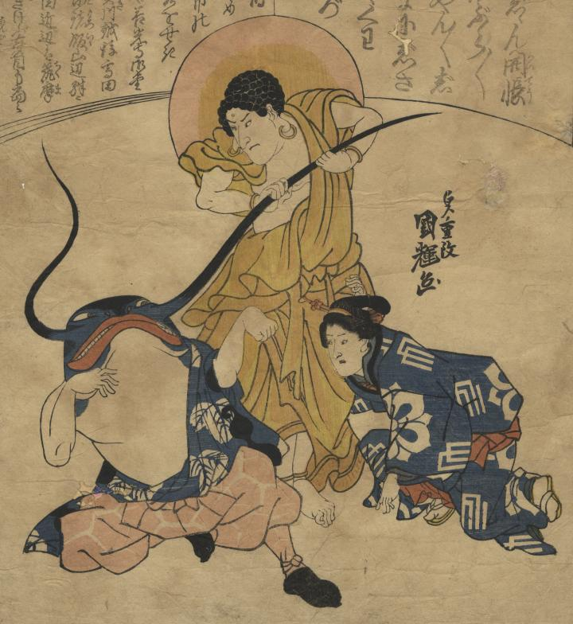

← 图鉴索引

善光寺の阿弥陀如来に髭を掴まれた鯰男が、女と拳（じゃんけん）の勝負をしている。
著作者：歌川國輝／出典：親書誌：U426_nichibunken_0427：かわりけん／日付：2016／資源識別子：U426_nichibunken_0427_0001_0000
Copyright (c)2010- International Research Center for Japanese Studies, Kyoto, Japan. All rights reserved.